主席团
团长统筹乐团整体工作，协调内外事务，制定发展规划；副团长协助团长管理日常训练、演出及团员考核，发放学分，后勤管理等事务。
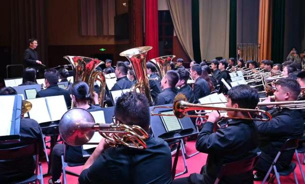
01 / 社团简介
本社团成立于2014年11月，是在学校大力支持下建立起来的学生高雅艺术学习实践平台。乐团现为"云南省省级乐团""云南省大学生示范乐团""云南省高雅艺术进校园先进团队"。乐团成员涵盖本、硕、博不同层次学生，现有2个训练团、1个演出团共计200余人，先后培养在校学生1200余人。团员大多为"0"基础起步，经过外聘优秀教师的专业培训与刻苦训练，逐步成长为优秀演奏者。
乐团始终坚持系统化、标准化、科学化建团，建立了完善的"交响管乐标准化、集体化教学体系"。近年来，乐团在全国第五届大学生艺术展演中荣获一等奖，实现云南省大学生交响乐团全国奖项零的突破；在全国第六届大学生艺术展演中再获二等奖。乐团长期开展"高雅艺术进校园"项目，多次承担省级专场演出。2026年元旦，乐团以《奥菲欧序曲》拉开新年音乐会帷幕，通过五大乐章融合古典交响、影视金曲与流行旋律，展现精湛技艺；同年6月，乐团积极参与学校首届"美育传习·稼穑声韵"器乐展演，为全国第八届学生艺术展演选拔人才。未来，乐团将继续秉持"以美育人、以文化人"的理念，深化美育实践，为培养德智体美劳全面发展的时代新人贡献力量。
02 / 声部组成
从木管到铜管，从打击乐到低音提琴，声部和鸣，浑然一体。
团长统筹乐团整体工作，协调内外事务，制定发展规划；副团长协助团长管理日常训练、演出及团员考核，发放学分，后勤管理等事务。
负责长笛声部演奏及训练，音色清亮悠扬，常承担旋律线条。
负责单簧管声部演奏及训练，音色圆润饱满，表现力丰富。
负责萨克斯声部演奏及训练，音色抒情柔美，兼具古典与流行。
负责小号声部演奏及训练，音色嘹亮高亢，常引领乐曲高潮。
负责圆号声部演奏及训练，音色温润宽广，衔接高低声部。
负责长号声部演奏及训练，音色庄严雄浑，增添乐曲厚度。
负责上低音号声部演奏及训练，音色醇厚柔和，填充中低音区。
负责大号声部演奏及训练，音色低沉厚重，筑牢低频根基。
负责军鼓、定音鼓、钢片琴、架子鼓等打击乐器演奏及训练，掌控整体节奏。
负责低音提琴声部演奏及训练，弓弦交织，铺陈乐曲低音线条。
03 / 精彩瞬间
每一次登台，都是热爱与艺术交汇的瞬间。
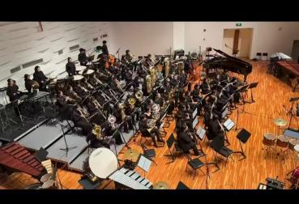
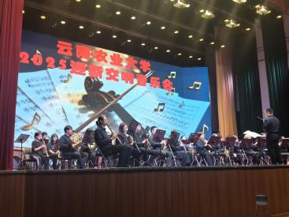
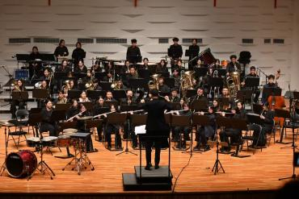
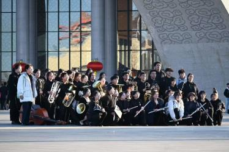
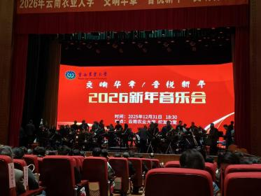
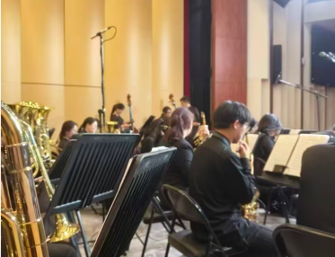
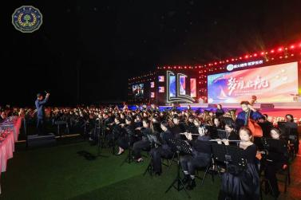
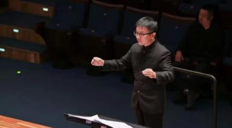
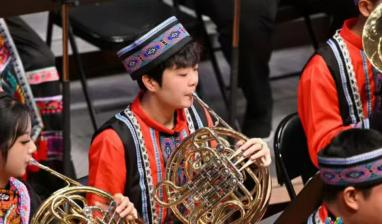
04 / 精彩活动
常态排练与特色美育实践并存，用管弦连接校园与时代。
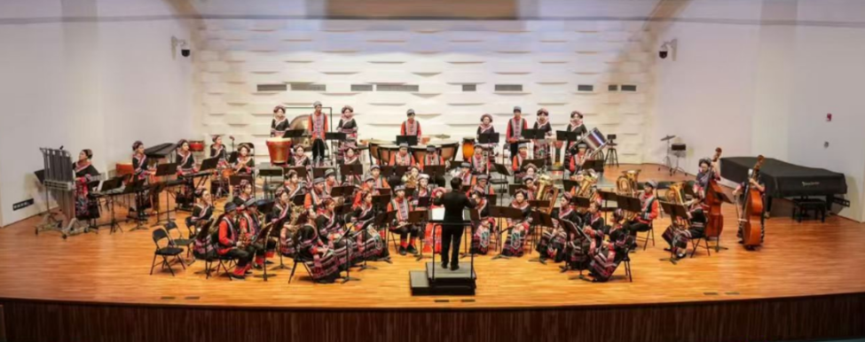
01
云南农业大学大学生交响管乐团在云南省第八届中小学生艺术展演中带来的《农民院士》，展现了农村的自然风光和人文情怀，又体现了科技进步对农村生活的积极影响。
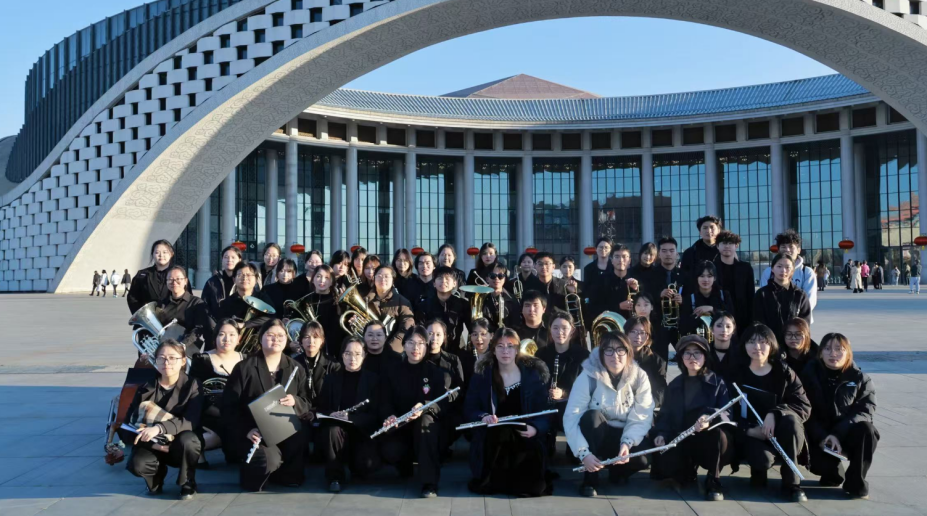
02
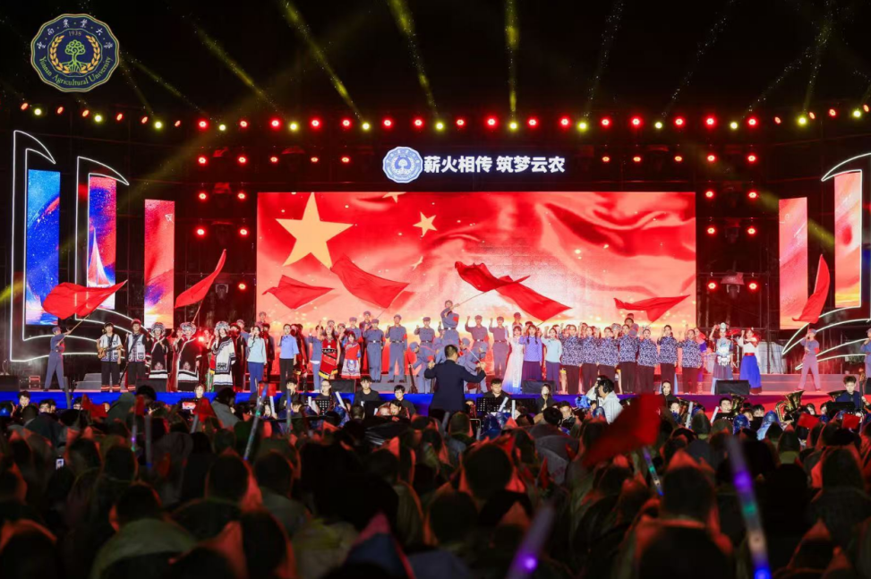
03
05 / 荣誉墙
每一次登台出征，都是热爱与坚持结出的果实。
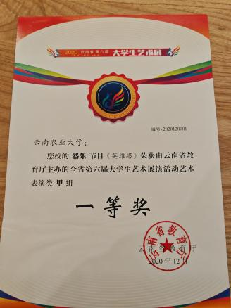
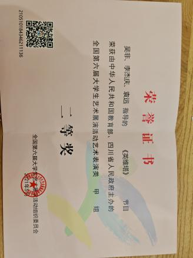
国家级
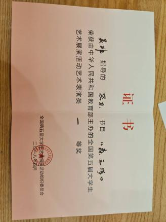
省级
省级
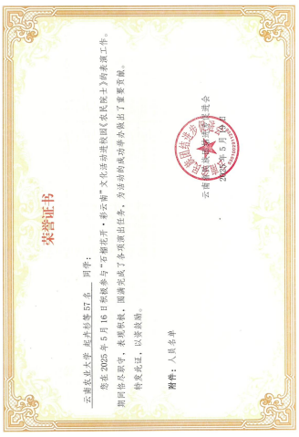